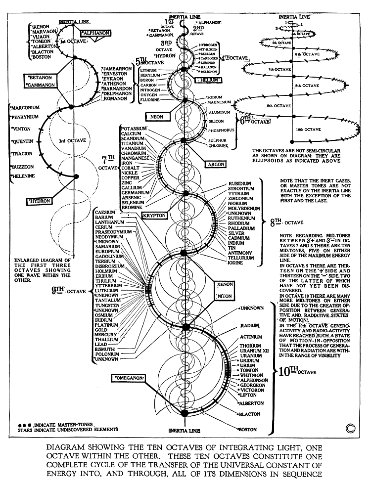
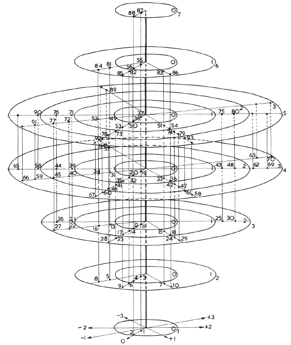
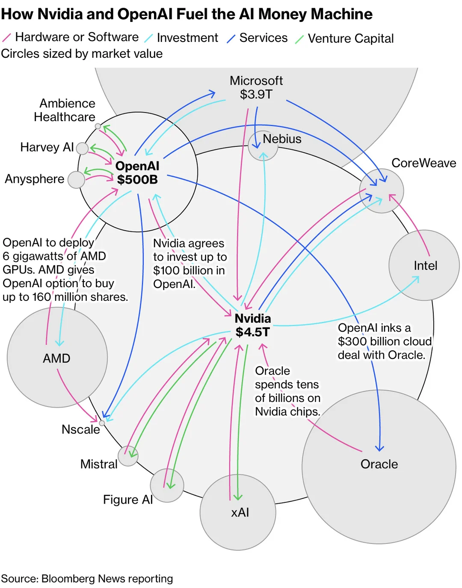

_ _ _ _ _ _ _ _ _ _ _ _ _ _ _ / \ / \ / \ / \ / \ / \ / \ / \ / \ / \ / \ / \ / \ / \ / \ ( M | E | M | E | N | T | O | M | O | R | I | . | N | E | T ) \_/ \_/ \_/ \_/ \_/ \_/ \_/ \_/ \_/ \_/ \_/ \_/ \_/ \_/ \_/MEMENTO MORINTERNET
Anecdotes of a dying immortal world wide web, reflecting on an eventual tabula rasa of the internet as an herald of the anthropocene

Dancing Baby, Internet Meme[IMG01]
Abstract
This thesis investigates the fragility, materiality, and temporality of the World Wide Web within the context of human – technological evolution. It reflects on the internet as being an extension of the dichotomy of being an immortal utopia and an ephemeral, transient dystopia of the Anthropocene. Through a combination of personal narrative, media theory, and digital archaeology, the thesis examines a lifelong relationship with the web—from early experiences with computers and gaming to professional practice in design and web development. The research traces the shift from the open, communal spirit of the early “handmade web” to a corporatized, cloud-based, and increasingly opaque digital infrastructure. Central to this exploration is the phenomenon of “digital decay”: the disappearance of independent creative websites, type foundries, and online archives, revealing the paradox of a supposedly permanent medium built on transient and privately owned systems. Examining the web as both a living archive and a decaying organism, ever-expanding, yet ephemeral, record of human intention, memory, and loss. Through speculative inquiry and digital collection practices, it seeks to uncover the archaeology of our online existence and confront the existential tension between immaterial data and its deeply material foundations. By engaging with concepts such as the Dead Internet Theory, the material infrastructure of the cloud, and case studies like the death of Adobe Flash or the shutdown of Parler, the thesis interrogates what it means for the internet to “die” or be “reborn.” Ultimately the questions arise: what remains of our culture when the servers go dark? What does it mean to preserve or resurrect the digital in an era of algorithmic authorship and artificial intelligence? --------------- It was hot, the night we burned Chrome. ― William Gibson, Burning Chrome[01]Foreword
I witnessed the new millenia. When I was 6 years old, I was gifted a gameboy and had my first interactions with technology with a processing unit – a computer in other terms. Interaction with those devices enarmored me from the beginning and clutched me in it's grasp ever so tightly. Was it escapism, the moment to have a different reality at your fingertips, a portal to a different world? A realm of my own. It seems those feeling have not diminished and would just transform or translate to new devices and mediums. I played on the old computer of my father for hours a game, where one would smash the desktop as a fictional image or burn it, or hammer on it. A surreal thing, the digital. Pixel, which in turn are just colored dots on a grid flare up and create an image. Similar to the "The horse in motion"[02], stills of a horse rider riding as birth point for film and animation, where enough images in successive speed let us think a real motion is happening in front of our eyes, the same happens with our eyesight, as we see thousands of tiny spots that build one image on our screens. Things changed the moment I had my very first own computer. Where gaming was my main entry point before, there was now another one. The world wide web. Reading stuff on the internet, videos, images, looking up stuff, listening to music through the internet, where it was before bound to be shared by bluetooth or burning discs here and there. And it has not changed to this day. I am bound to this medium day and night, it's a fixed constant in my life. Be it the working life, entertainment, my way of wayfinding, gateway to information. The endless working network that is the internet is always part of my life. This seems not the outlier or unique situation. The internet commands, assists and is part of all populated/city-bound society (using services like Starlink, opens up even remote regions, never being able to connect before). Modern society, capitalism and the current anthropocene rest on the pillars of an almost instant, effortless, barrierfree information system that links millions of machines to each other to make the pixels on each of our devices flare. Workwise, the world wide web has always interested me. After my first graphic design diploma I built my very own websites, crudely with html and css in the editor and browser, then in the early arrival era of site-builders which made it more visual, easier to grasp for a designers mind. But both ways, became slowly maybe not completely part of my practice. I still think I am first and foremost a designer at heart, but slowly interacting with the building blocks of the web, changed my way to look at design. I started to think in modularity, repetition, automation, leaving the flat plane of design and going into the creation of subset and rules, systems to make your visual communication stand out and communicate precise and holistic. All of this, and of course my environment and the chaotic-neutrality of life itself, led my down a path, where I worked as User Interface Designer, User Experience Designer, Low-Code Developer, study in a class in germany focused on bridging the gap or space between design and the digital, to creating websites flat with design software to programming them by hand. Being a tiny part of the handmade web for some parts, shaping capitalist outer exteriours for brand on others. Engulfed in the internet, there was only question that persists and wavered over my head like the sword over the head of Damocles[03].Refreshing the memory to die...
We know how the internet started, but do we know how it will end? Perhaps to be reanimated by the Internet Archive in the near-future—reshared on a federated social network, accessible only by an alpha-numeric sequence of letters and numbers described by users as a “hash”, re-syndicated through a decades old protocol (three times removed from its original intent), transmitted through conduits of optical fiber crossing continental distances, buried and submerged—everywhere and nowhere at the same time.[04] Collecting my interests on the web, – as an avid fan of medieval/ancient visualities, tropes and symbolism – I find a lot of references to death and mortal themes. Coming from woodcut art, scultpures, gothic architecture. Bringing up the term Memento Mori[04] (Remember you will die, to die), which in ancient Rome was linked to skulls, decaying flowers and the dead. It was whispered to triumphant generals to battle their hubris, written over graves of lineages or philosophers cited those words enclosed in tombs cradling ebony skulls. As a saying it was meant to remind one of their own mortalitiy and give weight to their life and choices. If one does not translate it to, "remember you will die", but even "remember to die". This changes the meaning, that there is 1. a definitive death – against all preserverance and nihilism and 2. that the responsiblity and cognitive consciousness of this death rests on the dying corpus as well. Language is again, as the holistic core of the internet as hyper text language a determining factor for creation on the web and maybe the archivar, translator and sculptur to engrave it into the frame of history. So I have chosen, this morbid saying as backbone of the title of this thesis to deal with this question. How will something end we seldomly think of being able to? How will we remember it's end and finally how do we react and adapt to an end of something unending?Et in Arcadia Ego
We can also trace this thought to a painting[06-01] by classical painter Nicolas Poussin, depicting a pastoral scene of 4 sheperds gathering around a tomb with the latin inscription "Et in Arcadia ego", which is translated to "Even in Arcadia, there am I". The tomb as a symbol of death, Arcadia meaning a symbolic vision of natura and derived from the greek province with the same name.The province's mountainous topography and sparse population of pastoralists later caused the word Arcadia to develop into a poetic byword for an idyllic vision of unspoiled wilderness. Arcadia is a poetic term associated with bountiful natural splendor and harmony.[07] The sheperds tend to the bountiful forests like users to a shared space. In the context of a Memento Mori, the depiction could also mean and signify death. Is the physical tomb be symbol to remind the sheperds that even in the lush paradise of Arcadia death still persists? Even in utopia, death or atleast a moment of remembrace of it prevails or might even be a memorial of the past written for the future that is yet to come. "Three Sicilian shepherds and a woman gather around a tomb in Arcadia. An ancient district of Greece, made inaccessible by mountains, Arcadia has come to mean an unspoilt land populated by innocent rustics. It is the very exemplar of the pastoral, a word derived from the Latin for shepherd. The man in the middle, kneeling, is tracing the tomb’s inscription. The shepherd to the right gazes quizzically at the erect figure of the woman, who, as the embodiment of reason, contemplates the lot of one who once knew Arcadian bliss but has gone the way of all flesh. Et in Arcadia Ego is the voice of the entombed speaking: ‘Even in Arcadia, there I am’."[06-02]The web as a space and ritual
“Science fiction tends to behave like a species of history pointing in the opposite direction, up the timeline rather than back. But you can’t draw imaginary future histories without a map of the past that your readers will accept as their own.” ― William Gibson, Burning Chrome[01-02] When we are using our technical devices with a connection to the World Wide Web, we are logging into a medium that is changing and though still stuck in its birthing idiosyncrasies at the same time. A sphere or plane where things are stored. We take two devices, one that can store information and one that asks the other to see and interpret that information. The internet is in its essence a two-way relay, a reversal transactional translation of communication between two end points. As storage devices, these devices transcend to archives, storing our content, storing communication, thought in written form, again translated through language from internal thought processes to something readable through a filter/translation/transformation device on another end of the communication. So it reflects and reminds of human interaction, in a passive/reactive, pre-determined state. Like it is human communication that is stored and interacted with later on. But it comes through passed by another human. Like messages that are written at one time and read at another time, again by a human. Those processes signal the root and first and foremost creation of the internal web between remote machines as storage/archive devices. The web as a space to in retrospect pass on information created by humans. So as a space and location it fades even more into a relation to human interaction. Human create on the web, machines save and store it and translate it later on again anew for another human. Like a hall we enter, scream to someone else on the other side, and he only hears it once they step on a certain point in the hall to hear the scream. You have to create something, store it and someone else has to perform a ritual to let it be created again for them. Time is different in the digital realm, we can look at that information at any point by our interaction. It is the same with an image, text on devices, but a book and stone slate also share this, as intrinsic to everything that is a publication medium. But the internet, overwrites and deletes with an rapidity unprecedented. It becomes to the fast reseting of an archival storage for information. Where other mediums rely on physical form for the safety of its content, the web space changes, adapts, has abilities to store forever but also paradoxically doesn’t. This essay, deals with this question in particular. How a medium so removed from death and ability to reproduce endlessly, less bound to physicality, slips into an snippet and sliver of accelerations and speed to rewrite and overwrite itself and reinvent its own content. Deleting itself and reforming faster than it can produce. The web seems to grow with the same rate as the knowledge it holds, reminding of time and space itself, where there is no beginning and end as the growth is only limited by remnants of physicality. Where material in books, grows more linear, enables technology a growth that equals the same power invested into technology can now hold more information than before. Where a book or Stone has its dimensions, materiality, material, size define the momentum it holds, we can see a shrinking file size in reverse correlation to amount of data stored in the digital realm.How does the internet look like?
Being a graphic designer, it comes naturally designing mostly flat surfaces in the second dimension. But you are also designing experiences, ways to communicate, options for participants of your creations and in the end system that might exist in the third realm and involves more than just the visual. By the way of a visual artistry and examination, I am often trying to imagine how the network I interact with so devote and obsessive. Giving a graphic shape to the digital, by means of diagrams, graphs or even visual metaphors. I also often think about the latent space of LLMs or Large Language Models, AIs (which are not actual artificial intelligent systems) when finding a subjective and personal imaginative projection of the world wide webs cyber realm. The latent space of a Large Language Model defines the availabe options the Model has to pick, its a compressed, low-dimensional representation of high-dimensional data. Visually we can think of Cloudfields or Pointclouds that are easier to grasp, as groups, categorization makes highly complex data easier to process and generate new content faster. I would also relate it to Set Theory. The internet's actual size or dimensions are hard to grasp, expansive and we don’t know if its more broad or tall. This quickly brings us back to the question of what we are trying to measure. Is the internet for browsing self-published websites? E-commerce? Messaging? Video streaming? Game playing? Social networks? While the intuitive answer might be all of the above, standardizing around a particular definition to accurately represent that reality has plagued internet researchers for decades, as has the location of the selected vantage points—where is Point A and Point B?[08] Can we even measure something that doesn't seem to have a clear start and end point? And the internet still grows, content gets deleted in an instant and replaced with even more amount of data. We are standing in front of point of endless Feedback Loops regarding LLMs that are crawling the web right now. I would like to bring up something unrelated in principle, but visually looked at it in a way of describing it as an infographic, I am drawing conclusions to the measurement of the broadth and width of the web space. As a visual mind map or imaginative imagery to understand the bubbles, webs, networks and our place in it. It also if looked in a timely based context or trajectory, one reflect on the history of web 1.0 through its iterations and it's changes with and causing changes in society, culture and individual interaction.
Walter Russell's Periodic Chart of The Elements https://www.meta-synthesis.com/webbook/35_pt/pt_database.php?PT_id=147 [IMG01]
If we try to imagine this image, or choose another visualization, we kind of get a transformation into the 3rd axis or three-dimensifnal space. This illustration, I would link to the depth and in a way sphere of the internet. Like the threedimensional planes that hold our interactions, like electrons making up material, our interaction and link/log in to the web. Tracing and orbiting bigger bubbles and elements of higher "mass". Translating it into physics, gravity and even webs by arachnids, the span, spin and orbit around centers of mass, power and influence/control. A universe, galaxies or planetary singular systems powering each ohter, slinging through the web space around each other. Each website a planet, each search engine a galaxy, each overarching theme of websites its own stretch of this digital universe. Walter Finke's spatial system of 1943 https://www.meta-synthesis.com/webbook/35_pt/pt_database.php?PT_id=294 [IMG01]
"But there's a thing called Moore's law, that makes the computers more and more efficeint and cheaper. Their alogorithms get better. We actually have universities where people study them. And they get better and better..."[09-01 06:44]Anecdotes
Adapting this framework of — searching, listing, collecting, curating, and presenting both probable and less probable answers—allows one to gain a tentative foothold in a subject of enormous breadth and depth. Such a topic is not only vast in scope but also bears intrinsic and medial complexity: it exists simultaneously as lived experience, as cultural artifact, and as technologically mediated object. By systematically organizing information while remaining attentive to uncertainty and ambiguity, one can navigate this complexity without losing sight of the original questions that prompted the inquiry. This method does not promise definitive answers; rather, it offers a structured approach to exploration, enabling patterns to emerge and connections to be discerned amidst the noise. In doing so, it acknowledges the limits of knowledge, while still advancing a coherent narrative – narrative that is faithful both to the phenomena observed and to the curiosity that initiated the investigation. When going deeper in those questions, I think I want to collect and list excerpts, anecdotes, thoughts, hypothesis, ideas, quotes that I roughly, sometimes obviously and sometimes faintly relate to those questions. Like the project started for me naively as a collector of things and reach out, go into depth and broader as a collector of things. After all the internet might be nothing more than a collection of text written on servers that are linked with each other. Its a latent space, hard to peek behind it’s veil of technological mysticism and aura [14], while still being a physical as well as metaphysical object at it's core.Archiving the transient and ephemeral
404 – Typefoundry not found
Using an online platform for storing text, images and aforementioned links, I am collecting various bits of research, inspiration, visualities and thoughts from passing through the various sites that make up my internet history. The typical setup of the museum-as-factory looks like this. Before: an industrial workplace. Now: people spending their leisure time in front of TV monitors. Before: people working in these factories. Now: people working at home in front of computer monitors.[10] It started as a way to collect my knowledge of websites of independent, non profit, free, open source type foundries, artists, designers websites etc. Each typedesigner used the web as a tool, one could classify of a utopian world (partly it still does fulfil parts of it, but only partially) to offer thoughts/material to be given without cost to educate, spread and create something anew together.So I collected thousands of links, hundreds of type foundries and websites of designers for their visuality, their typefaces to use in my practice or as inspiration for their intricate web designs. Like my own little library, museum or storage space, where I worked to collect what matters for my practice and paradigms. As part of my design and development practice, I use a platform called are.na, which is similar to image-collecting platforms like Pinterest but differs in its philosophy, business model, and algorithmic approach. Notably, it doesn’t use algorithms to present users with “fitting” content or images. In my research, I use are.na to save images, layouts, references, and website links as inspiration and curated resources for the design process. A significant part of design, whether printed or digital, is the application of typography and typesetting. The search for suitable typefaces often involves exploring the work and transaction platforms of their creators—type designers and type foundries. Using are.na, I save and organize typefaces I encounter into specific channels, allowing me to revisit or acquire them later if needed. Examples of these channels can be seen here and here. During my search—or almost hunt—through the depths of the Internet archive, I would often come across small, almost ephemeral web pages, created solely to publish a typeface for a limited audience or a very specific target group. These pages often felt fragile, fleeting, and intensely human in their specificity, a stark contrast to the internet’s usual aura of permanence and infinite accessibility. In such moments, the sense of absence—or even digital death—was palpable. A medium that typically promises immortality and endlessness suddenly felt finite, fragile, and temporal.Unearthening the graveyards of the world wide web
I encountered my first dead link, looking for free/open source, independent created typefaces in my channel "OPEN FREE FOUNDRIES FOR FUTURE". It must have been a search for a typeface for an experimental or studies related project, as there was no budget for typefaces and I started to look for free alternatives. When I visited one of the links, the website was not hosted there anymore. And this started to happen more often, time passed, and always when I came back to look for typefaces in my "Channel" to find out, even more links are broken, the websites were gone. What I didn’t expect, was the amount and speed at which a lot of those websites that offered free typefaces vanished. They were taken off the internet, without any way to find them again, as they were too independent/too small/too niche to be catalogued somehow with services like The Internet Archive's Wayback Machine, apart from as an example people (collectors, digital hoarders) like me. It’s not just web links that die without constant curation and care. Unlike paper, the formats that now store most of our data require certain software or hardware to run. And these tools can become obsolete quickly. Many of our files can no longer be read because the applications that read them are gone or the data has become corrupted, for example.[11] When I try to revisit those sites, they are gone—the typefaces are gone. The people who originally made them available may have had a change of plans, lacked funding for their projects, moved on to other work, no longer identified with their creations, or simply didn’t want them freely downloaded. There are countless possible reasons, but as of now, they have vanished without a trace, and we may never know the exact cause. Perhaps the creators passed away, or server fees went unpaid. Yet, underlying this disappearance is a broader pattern: the logic of a capitalist society, where effort and output are tightly bound to financial or material reward, likely shapes what survives and what disappears. This tension between abundance and scarcity, presence and absence, fed my urge to collect, to acquire what I could not fully possess. Every saved typeface, every archived page, became a personal act of preservation and curation—a way to wrest control of a fleeting moment of design history from the impermanence of the web. It was not simply about accumulation. In this sense, collecting became an active dialogue with design itself: a reflection on loss, memory, and the temporal nature of creative output. Perhaps this marks a first step toward developing a personal method or schematic for engaging with the seemingly immortal — how to approach, preserve, and interact with things that appear eternal, yet are vulnerable to disappearance. It is an attempt to map a practice for caring for the ephemeral within the infinite: to save, archive, and give attention to what can vanish despite its digital permanence.Dead Internet Theory
Upon researching the notion of an end or "death" of the web, I encountered the roots and crosscurrents of a conspiracy theory known as the Dead Internet Theory. This theory paints a grim and uncanny picture of the web: a space where the majority of content we encounter is no longer produced by human users, but by automated agents — bots, scripts, and pre-written systems — operating at a massive scale. These non-human entities are often tied to manipulative purposes, ranging from the spread of misinformation and fake news to data mining, scamming, and large-scale behavioral influence. The theory itself has evolved in tandem with the rise of automation. As bots and algorithmic systems grow more sophisticated, and as AI-generated content becomes increasingly indistinguishable from human expression, the line between genuine human activity and synthetic output begins to blur. What once sounded like paranoia now resonates with a strange plausibility in the era of generative AI, machine learning, and automated social media presence. We find ourselves in a paradoxical digital age — one that thrives on artificial participation. The accelerating development of AI technologies and large language models amplifies both the scope of automation and the sense of alienation within the web. These models are trained on the vast corpus of online content, scraping the digital residue of human culture to produce new material — which, in turn, feeds back into the web as fresh data. This recursive cycle raises critical questions: Where does human authorship end and machine reproduction begin? Can we still trust the web as a record of human thought, or has it become an echo chamber of synthetic voices? There is a need to re-enter discussions and confronting those questions and conspiracies at the forefront of a new digital and language model inhabited era. An era of artificial webs and algorithmic consciousness, the boundary between conspiracy and reality becomes increasingly porous. Discussions about authenticity, agency, and the future of online life must be revisited — not to sensationalize, but to understand. The “Dead Internet” may not describe a literal extinction of human presence online, but rather the slow, imperceptible transformation of the web into a self-sustaining ecosystem of machines — a digital mirror that continues to reflect us, even as we fade from its surface.Death on the Dropbox
The Internet has grown far beyond its original intentions. What began as a space for personal webpages, private journals, and experimental blogs has transformed into a vast infrastructure that stores not only our words and images but also our identities, histories, and the traces of our journeys across the digital landscape. As computational power and data storage capacity expanded, so too did our ability — and perhaps our compulsion — to collect and preserve ever more diverse forms of information. Early storage media, such as discs and tapes, gave way to the hard drives of personal computers, which themselves evolved from bulky, stationary machines to slim, portable devices designed to fit our increasingly mobile lifestyles. Eventually, the limitations of local storage led us to the “cloud” — a euphemism for the process of sending our data from one machine to another, over the Internet, for storage. Yet, at its core, even the cloud is physical: the data exists on servers, hard drives, and memory chips somewhere in the world, tethered to electricity, hardware, and infrastructure. Importantly, each era of technology has a unique “physics”—a term used to describe the hard-coded mechanics and incentives of every media platform, whether digital or analog. Users are as bound to these conditions when operating within a given platform as they are to gravity when walking on Earth. Platform physics are the ways in which a medium’s design determines a piece of content’s nature, the content’s “natural motion” through a network, its recipients’ responses, and the various nth order effects of this content being in circulation.[12] As I delved further into the notion of a “death” of human activity online, I discovered intriguing realities about what happens to our digital traces after we die. Consider Dropbox Inc., a popular cloud storage service: when a user passes away, the data stored in their account does not automatically vanish. A surviving relative must legally petition Dropbox to either delete the account or transfer its contents. This protocol highlights a fundamental tension between ownership, privacy, and control: our data outlives us, preserved and curated by corporations whose internal processes remain largely opaque. This dynamic evokes the concept of the black box from cybernetics and systems theory: a system whose inputs and outputs can be observed, but whose internal mechanisms remain hidden. While perhaps an imperfect metaphor, it captures the essence of our relationship to digital platforms. Our personal data is a commodity — meticulously tracked, stored, and monetized — yet the processes by which it is handled are largely beyond our comprehension. Users, the creators of this data, have limited insight into how it moves, transforms, or persists within these corporate systems. The constitution and structure of the box are altogether irrelevant to the approach under consideration, which is purely external or phenomenological. In other words, only the behavior of the system will be accounted for. – Mario Augusto Bunge[18] In this sense, our digital legacy persists long after our physical demise. We leave behind a networked footprint on servers owned by large corporations, a footprint that may endure for decades, centuries, or indefinitely. The apparent ephemerality of the web — the feeling that content can be created and deleted at will — is therefore illusory. In reality, we are less transient actors than trapped ones: bound to our digital records like insects suspended in amber, preserved by a system over which we have little control. This “immortality” of data prompts profound questions about authorship, ownership, and the nature of digital existence in an era where human and machine activity are increasingly inseparable.Data Church
As his bachelor graduation project at the Design Academy Eindhoven, Vito Boeckx developed an immersive VR experience that translates the invisible infrastructure of the internet into a navigable spatial environment. Using the physical locations of local Wi-Fi access points in Eindhoven as its foundation, the project constructs a speculative “digital city” that exists within the user’s field of view. Data Church is a VR installation/experience that visualises local network activity as a “digital city.” Visitors kneel at a ritual-like altar, put on a VR headset, and see neon skyscrapers generated from network data: access points and local browsing activity (e.g., sites visited / intensity of use) are translated into buildings whose size/height change with online activity. The work frames this as a reflection on the invisible infrastructures that measure and shape our online behaviour and the resulting “bubble” or city-like data landscape. By visualizing browsing habits as architectural forms, the project exposes how digital activity is quantified, spatialized, and abstracted. The resulting cityscape reflects the bubble-like development of our online realities, questioning how systems of measurement shape perception, reinforce digital echo chambers, and influence the way we navigate both virtual and physical spaces. "Screen recordings from nearby modems are turned into huge neon-lit skyscrapers, emphasising the scale of it all; each tower grows when online activity intensifies. We all contribute to this omnipresent yet invisible data flow, which increasingly dominates our lives. Is 'data-ism' becoming a new religion? Data Church offers a sanctuary for reflection on our digital behaviour."[13]The dichotomy of the utopian and the dystopian scenarios of the digital realm
..we loved our tech entrepenours, we loved Steve Jobs, we loved this nietzschean myth of the techie who could dent the universe. And that mythical power still has a hold on us, as well. So you have these two different passions for making everything free and for the almost supernatural power of the tech entrepeneur...[09-02 05:45] Although the internet is often imagined as something ethereal—“the cloud,” “cyberspace,” pure information — it is fundamentally dependent on a vast physical infrastructure: undersea cables, data centers, satellites, server farms, and millions of interconnected machines humming in climate-controlled warehouses. This physicality is energy-intensive, resource-heavy, and deeply embedded into geopolitical and economic structures. Yet, at the same time, what we experience of the internet feels weightless. Digital spaces mimic qualities of thought and memory more than physical objects: duplicable, searchable, instantly transferable. The friction of physical distance is reduced to milliseconds. In this way, the internet embodies both the grounded materiality of an industrial machine and the fluidity of a symbolic or informational system. This dual nature is not just a technical phenomenon—it affects how we perceive permanence, value, and truth. "Early digital culture, and indeed digital culture to this day, had a sense of I would say, lefty socialist mission about it. Unlike other things that have been done, like the invention of books, everything on the internet must be purely public, must be available for free. Because if even one person can not afford it, it would create this terrible inequity....[09-03 04:45] The early vision of the internet—rooted in cyberpunk fiction, digital counterculture, and idealistic techno-utopianism—imagined it as a radically open, decentralized, democratic medium. A place where knowledge flowed freely, hierarchies dissolved, and new forms of creativity and community could flourish. And what we call the World Wide Web today exists somewhere in the middle of a vast, tangled spectrum—an ever-shifting space, suspended between utopian promise and dystopian machinery. It’s a realm torn between bot armies waging invisible battles over political influence, and the endless rows of server farms and data centers tirelessly training Large Language Models that shape our digital interactions. It is monitored by intelligence operations like the CIA’s PRISM program, yet simultaneously challenged by the radical transparency of platforms such as WikiLeaks. It’s a domain inhabited not only by state actors and corporate giants, but also by niche subcultures—CyberSec enthusiasts, chaotic-good gay furry hackers, digital anarchists—each carving out their own peculiar corner of the network. At the same time, the rise of social networks has rewired communication on a planetary scale, transforming how people organize, express themselves, fall in love, and wage information warfare. And threaded throughout all this chaos is free education in the form of hypertext—knowledge scattered across screens accessible from virtually anywhere on Earth, offering endless learning to anyone willing to navigate it. The internet has become a sprawling arena of Cyber Ops and countermeasures, where the good, the bad, and the downright bizarre coexist in the same bandwidth. Its influence spans a web that touches every user, whether they understand the machinery behind it or simply feel its pull. It is both a mirror and a map of humanity, messy, brilliant, dangerous, and inescapably interconnected.Do we think i's the creation of a monster?
"It will just take some time to figure it out. A lot of details to work out, totally doable. (Laughter). I don't believe our species can survive unless we fix this. We can not have a society in which, if two people wish to communicate, the only way that can happen if it is financed by a third person who wishes to manipulate them"[09-04 14:02] When examing the web through our prior lense of dichotomy, after passing through the material duality of the physical and the digital, we also encounter the econimoic utilitarian and knowledge altruism aspect of the internet. Founded on principles of sharing, communication, founding communities, connecting humans beyond physical limitations, it evolved and grew like a steel rose its thorns of capitalist ownership, data collection, a sprawling galaxy of business forefronts in the digital, herds of users flocking to platform altars of monopoly mega corporations, as META (Facebook) or ABC (Google). Does the world wide web have a shelf life, by being owned physically?Tim Berners Lee, 1997[14]
What Tim Berners Lee predicts in this interview in 1997, our current reality of the webspace micro and macrocosmos, one can only think – Was the trajectory path of our connecting technology already intrinsicly shaped – or have we just left he way its founder and inventor paved it for it? A web of friends, family, and strangers, interacting and connecting, more so than a virtual supermall for entertainment, work and fake information. In this economy, even spectators are transformed into workers. As Jonathan Beller argues, cinema and its derivatives (television, Internet, and so on) are factories, in which spectators work.[10-02]Free Speech, or the Power of the Monopoly
In the wake of the political climate of the elections and era of trump administration, as well as the rise of hate-speech and radical content on social platforms like twitter, facebook,..., a new platform came to rise from it's competitiors. The platform called parler, advertised itself as harbinger of free speech and after Trumps Ban from twitter.com, saw sudden rise in user numbers and popularity from associated political camps. "...The site effectively "went dark" after Amazon.com Inc (AMZN.O) suspended its web hosting service and will remain so unless it can find a replacement. ...The platforms said Parler was not doing enough to prevent the spread of posts inciting violence, following unrest at the U.S. Capitol by Trump supporters last Wednesday after weeks of violent rhetoric on online sites."[15] Parler has since then had to move offline as there was no competitor to AWS suitable to host its enormous data structure.[16] Since then they are trying to relaunch, in essence having been broken from this ban by AWS. Without commenting on the political layer of the debate, what us this example shows, is also the newly notion of an owned web. When a large portion of the web is owned by corporations, which abide by their own rules and have the right as owners to discontinue services, it seems our current realities are drifting far away from what a soft or collaborative web was enviosioned to be, in its birthor even from now on.Resurrection of dead.dot.com Titans
When looking at the history of the web and it's trajectory through time and it's distinct eras, the financial and economic cluster is always intertwined, as with all technological breakthroughs. With great economic boom, comes a bubble ready to burst at its fragile and speculative seams. This happened with the dotcom crash[21] in 2001. We are seeing similar patterns and events with the connection of speculative, econimic market and digital technology, like the rise and shortlifed craze around NFTs. A project that artistically deals with both of those events is an art project by Simon Deny and Guile Twardowski in 2021. Dotcom Séance looks at time and the internet by reviving “dead” Web 1 companies with Web 3 technology. The selected companies were re-enlivened by being “conjured” through a series of AI-generated logos. Fed on prompts describing each company, the generated logos serve, in essence, as instances of the internet re-imagining itself. Twardowski also created one unique, bespoke rework of each company’s logo based on these outputs.[18] This project investigates the intersection of artificial intelligence and NFTs as symptomatic of broader technological and economic paradigms. It situates these developments within the accelerating cycles of innovation, speculation, and obsolescence that characterize contemporary digital culture. The work seeks to freeze a moment of technological and cultural significance — the emergence of blockchain-based art — at the threshold of its own decline. Referencing the historical precedent of the dot-com crash, the project interrogates the paradox inherent in employing speculative technologies as both medium and subject. Through this lens, it draws attention to the repetition of economic and ideological patterns: the rise of techno-utopian narratives, the inflation of market-driven hype, and the inevitable collapse that follows. By tracing the relational ties between open financial markets, internet-based corporations, and blockchain art economies, the research reveals a shared structural dependency on belief systems of immaterial value and technological progress. The ensuing crises — whether of trust, liquidity, or meaning — expose the fragility of these digital instruments and their entanglement with human economic desire. Ultimately, the project reflects on the temporality and materiality of technological phenomena, positioning NFT and AI art within a continuum of digital speculation and decay. In doing so, it questions the ontological status of digital artworks as both products of and participants in the recursive dynamics of creation, commodification, and collapse.
How Nvidia and OpenAI Fuel the AI Money Machine, ©Bloomberg[IMG02]
We can speculate and set our awareness on these entanglements with the rise of artificial intelligence and LLMs as well. As their bubbles, their stake and growth are suspiciously blown up, shaping up to eventually becoming quite reminiscent to the dot-com crash decades ago.The Adobe Flash butterfly effect
How transient the digital really is, can be observed in the Killing of Flash by Adobe and the subsequent public railroad halt in a northern chinese town for over twenty hours. The train company in Dalian, China used an application written in Adobe Flash to run their internal technical system of the railroad network on it. Adobe announced 2017, they would subsequently kill their support and availibity of Flash online in exactly 3 years time. It's not like Flash's demise was sudden; it's been known since 2017 that it was going away, and this railroad somehow managed to ignore that until they had absolutely no choice, and everything stopped.[19-01] "...I can't for the life of me fathom why anyone would want to run a freaking railroad network on it, with physical, multi-ton moving railcars full of human beings on it... – Jason Torchinsky[19-02] As technologies are changing, developing and also being gatekept for economic reasons, these events are bound to happen. And s software development and platform availability remain subject to economic, political, and corporate gatekeeping, the temporal instability of digital tools must be recognized as a central factor in the design and governance of critical infrastructures. This episode serves as a striking reminder of the fragility inherent in digital systems, even when they manage deeply physical, real-world operations. It also underscores a broader truth about technology: as it evolves, becomes obsolete, or is restricted for economic or licensing reasons, unanticipated disruptions are bound to occur. The lesson is clear—while software can seem permanent when it underpins our daily lives, it is ultimately ephemeral, and overreliance on any single proprietary tool carries risks that can extend far beyond the virtual realm.Archaelogy
The Web as Hyperobject and Herald of the Anthropocene
Using the World Wide Web, one can collect and curate knowledge and insights using their respective url/links to find them at a later point. An endless library to be filled by own interests and tracking your individual journey through the web. A personal "Archive of the Planet"[20]in the digital realm. "All creative works that can be put into digital form can be linked in a way that depends on nothing but the intellectual content of the material itself - no reliance on remote servers or any organization. It is simply a mathematical function on the actual intellectual content, and people would need nothing more than the function."[21]The physical and the ephemeral, like silks making up the spiders webbings
This made me rethink our preconceptions of what the Internet is, was, or could be. I have always considered it a medium that excels precisely because of its immateriality — the idea that it exists everywhere and nowhere at once, accessible from any device, at any time. Yet, the more I consider its infrastructure, the more I realize that this immateriality is only one side of the story. The Internet, despite its ethereal presence in our browsers and apps, is deeply rooted in the physical world. Data travels along vast networks of fiber-optic cables, under oceans and through continents, it is stored in massive server farms consuming unimaginable amounts of energy, cooled by industrial systems, maintained by humans and machines alike. Even satellite networks like Starlink, often celebrated for their ability to provide connectivity independent of terrestrial limitations, rely on hardware, orbit mechanics, and launch infrastructure — all profoundly material realities.
The PlayStation 2’s history includes a clever hidden feature tied to its iconic startup animation. When players booted the console, the number and height of the floating pillars were secretly determined by how much data was stored on the memory card[IMG01]
This duality of the Internet — immaterial in experience, yet rigorously physical in form — shapes both how we perceive it and how it shapes us. It can feel infinite and weightless: a realm where ideas move at the speed of light, where our words and images can seemingly float freely across the globe. But every click, upload, or stream is tethered to tangible objects and processes, to chips and cables, cooling fans and power grids. The “cloud” itself, so often imagined as an abstract, virtual space, is a constellation of servers in real, earthly locations, subject to electricity outages, natural disasters, and human oversight. This intersection of the material and immaterial also raises profound philosophical and ethical questions. If the Internet is never fully offline, independent of most environmental or geographical constraints, then the traces we leave — our data, our creations, our digital selves — exist in a liminal space, neither entirely present nor entirely absent. They are immaterial expressions encoded in physical substrates, yet their permanence is shaped by social, legal, and technological structures. This tension between the virtual and the tangible forces us to reconsider the very nature of the medium: it is at once ephemeral and enduring, immaterial and solid, human and mechanical, a space where our creations are liberated from the physical world, yet ultimately bound to it. Over the last several years, much of our digital media has migrated to what came to be known as “the Cloud.” Stacks of CDs and DVDs and CD-ROMs have given way to cloud accounts and streaming services. The old material forms were already examples of digital media. But now that our data is more likely to be stored at distant data centres rather than discs we store at home, it becomes increasingly plausible to imagine the digital sphere as an immaterial realm.[10] It could appear as a transcendence, even an Apotheosis[XX] of our content — the sense that once our words, images, and creations enter the digital realm, they gain a form of immortality, floating free of the constraints of time, decay, and physical space. In the cloud, our content seems to hover untethered, accessible from anywhere, persisting beyond the limits of our own lifespans. There is a subtle techno-mysticism to this perception: we imbue the cloud with qualities of ephemerality, ubiquity, and even sacred permanence, as if our digital creations had been lifted into a realm beyond the material. Yet this transcendence is, in many ways, illusory. Every byte of data is still bound to physical objects — servers humming in refrigerated rooms, fiber-optic cables stretching across continents, satellites orbiting the planet. The seeming immateriality of the cloud is a carefully constructed abstraction, a user interface that masks the very tangible infrastructure underpinning it. Our content may appear weightless, but it requires electricity, maintenance, and human oversight; it is housed in machines that can fail, be destroyed, or become obsolete. The Apotheosis is therefore partial: a sublime mirage that seduces us into imagining our creations as disembodied, while in reality they remain chained to matter, energy, and the systems designed to preserve them. Far from being an immaterial medium of human communication, digital media is built on an expansive, sophisticated, and costly material infrastructure that is more often than not removed from our everyday experience and that we are happy to ignore.[15] This interplay between the ethereal and the physical underscores a central paradox of digital existence: we experience a form of liberation from the corporeal, yet our digital selves, our creations, and our legacies are always intermediated by objects, networks, and infrastructures. The mystique of the cloud offers a sense of transcendence, but it is a transcendence defined not by the absence of matter, but by our perception of disconnection from it — a techno-mystical veil over an entirely physical ecosystem. This strange dance of ritual and superstition will become only more pronounced over the next decade. Thanks to ubiquitous smartphones and cellular data, the internet has developed into a kind of supernatural layer set atop everyday life, an easily accessible realm of fearsome power, feverish visions, and apocalyptic spiritual battle.[XX] In this light, the “immortality” of digital content becomes not a liberation from the material world, but a sophisticated choreography between illusion and reality, where our creations live as long as the machines, networks, and institutions sustain them. The "cloud" metaphor only reinforces the idea of immateriality. But, once more, the truth is more complicated. The cloud is a metaphor for a thoroughly material infrastructure that makes cloud computing possible. Our data exists in massive data centres distributed throughout the world and made up of servers, routers, switches, and miles of cables, as well as redundant power sources, cooling and ventilation systems, and security apparatus.[11] Being able to copy and reproduce itself more quickly than any previous media we invented, one might assume that digital content is bound for eternity. In theory, every file, every webpage, every piece of creative work could exist forever, endlessly duplicated and preserved. There can and will always be backups, dispersed across servers, personal drives, and cloud storage. Indeed, various initiatives, projects, and institutions exist specifically to safeguard fragments of this digital universe — for example, the Internet Archive tirelessly preserves websites, books, and multimedia, attempting to capture a snapshot of our collective digital culture. Yet despite this capacity for preservation, the reality is far more fragile. Files get lost, servers fail, domains expire, and content disappears as quickly as it appeared. Even with technological redundancy, the impermanence of digital media reminds us that survival is not guaranteed; the endurance of our creations depends not only on our ability to copy them, but on sustained human effort, interest, and infrastructure to maintain them. "We need to preserve this archive, it is the single most important thing we have. Without it there is nothing. It is a collection of everything we've ever done ever, nothing can live up to the scale of it. It needs to stay" – Comment by user @TheMiniMaestroMan on the video titled "The Internet Archive is WAY more important than you think" by Joey Yee[12] And even with those endeavors, crucial parts of the fabric of the net is lost in the ephemeral web space. I think it is fascinating, that a medium, with the aformentioned qualities, is the one where I don't find independent works of art anymore, completely lost and gone with the push of a button. It seems contrary to the events, when Tim Berners-Lee made the internet, created hypertext, made the download button (which in turn is the only actual/personal ability to store something locally from the web). How does the internet differentiate to what it was before or would become. What if it is turned off. What is lost and what will stay. What would be the remnants of our digital era. A speculative mapping of the archaeology of the digital in the future has to happen. "The worldwide network of machines we have constructed, the vast databases of information we have assembled, and the countless lines of code we have written, are active participants in the world, and are increasingly capable of acting without human intervention or even intention. How we account for and live with this, how we share the world with active, non-human assemblages is one of the greatest (and most exciting!) challenges we are presented with."[13]2TB of the internet
In 2009, when Yahoo! announced the shutdown of GeoCities, a volunteer group known as Archive Team initiated a large-scale preservation effort. They managed to download and compress roughly 2 terabytes of data, encompassing millions of personal homepages created by users between the mid-1990s and early 2000s. This collection — often referred to as the “GeoCities Torrent” or “2TB of the Internet”—became both a digital time capsule and a symbol of the web’s fragility. “We sprang into action, and part of the fury and confusion of the time was we were going from downloading a handful of interesting sites to suddenly taking on an anchoring website of the early web,” Scott recalls."[13] The materiality and digital-archaeological significance of user-created web pages become particularly evident in this case of an archival effort that sought to preserve the remnants of GeoCities prior to its deletion. As one of the earliest large-scale repositories of personal web expression, GeoCities embodies a crucial phase in the evolution of the participatory web: an era when the internet functioned as a site of amateur creativity, self-publishing, and communal experimentation. The 2TB archive represents not merely a collection of obsolete HTML documents but a digital stratigraphy of early networked culture—traces of identity formation, aesthetic experimentation, and socio-technical engagement encoded within the markup itself. From a media-archaeological perspective, these sites constitute artifacts that reveal both the technical affordances and the ideological frameworks of their time. The simplicity of their code, the conspicuousness of their visual design, and the idiosyncratic nature of their content collectively speak to a form of digital materiality often effaced by the seamless, corporate infrastructures of today’s web. The 2TB archive was seeded during the early 2010s using seed and torrent software limewire, as a way of decentralized file and in a way then, if we try to connect the dots to arguments discussed before, communal collaborative archive for its content. That torrent shareware like limeware or napster, is illegal and linked to criminal digital activities, is both its own complexitiy and undertone, as well as metalayer to the argument of saving the web. Maybe non-institutionalized or black-hat operations and methods have the greatest potential to save, what might have been lost digitally. The phrase “2TB of the Internet” entered discourse as a metaphor for the scale and materiality of loss in the digital age. It emphasizes how the seemingly immaterial world of web pages, hyperlinks, and online communities is grounded in very real storage media, servers, and data infrastructures. In media-archaeological terms, it represents a moment of excavation—a mass retrieval of digital strata before their erasure. It brings to mind a notion of archaelogy intertwined with technology. Like archiving, and searching, highlighting artefacts of recent history while they are still operating. Less an excavation, than an archival of said phenomena in the digital space, either through their authors and creators, users or spectators or even institutions e.g. platforms.War and War, or finding Peace with loosing what we had
The moments and phenomena of while urgently and conscioussly trying to save the web, we stumble and fail over our own ambition. Be the cause the tools we use, the material we have access to or our own maybe optimist intent. In the book "War and War", about the story of a Hungarian man who is obsessed with a mysterious manuscript, which he decides to travel to New York City to write down and post on the Internet.[XX] ...and it was in the center of the world he wished to conclude the business, that is to say the transmitting of the manuscript as he expressed it to the attendant, to eternity, and so he got hold of a computer and typed up the entire manuscript so it should find its place on the Internet, and having done so his work was over, because the Internet, or so the person had persuaded them a few hours ago while sitting at the table in the security guard’s hut, was the surest way into eternity, and he was convinced, the attendant bowed his head, that he absolutely had to die since life no longer had any meaning for him..[XX] At the end of the book, there is a link created for the book, where one could have possibly seen the uploaded document. This might have been the case 1997. Now, 28 years later, the files have been removed from the server. "In 1999 finally the novel itself was published but instead of the last page I placed its end in reality. To be more exact, the book simply could not bear to be the end to something, so the actual ending, I decided, would step over to reality so that the proper end could be accomplished there at least. And it was indeed accomplished, the following way: in the last chapter the hero asks the essence of his life summed up in one sentence be engraved on a memorial plaque and placed on the wall of a Swiss museum close to a statue of Mario Merz. It is here, by this last wish of the hero that the novel ends. Reality however begins only at this point, since its characters drawn into the novel - Marie from the train and her husband, a museum director and his wife, and Mr Kalotaszegi, the gallery keeper -- decide that this last wish of the hero, if the strict rules of fiction did not allow, should at least come true within the more compliant fabric of reality. So they have the memorial plaque made, inviting a Hungarian artist, Imre Bukta for the task, they ask him to engrave that certain last sentence on the plaque, they fix the plaque on the wall of the museum in question, and gathering all together there, on June 27th, 1999 at 11 o'clock a.m. they unveil the memorial plaque indeed. The reality of the ceremony and the plaque placed on the wall of the museum for eternity, the hero and the last sentence of the novel on the plaque - Háború és háború /War and War/ ends here and from here on it is played on different instruments: its whole material from the single sentences of the messages through the text of the letter to the novel and the film on the unveiling of the memorial plaque in Switzerland is joined in a single work of art in this CD-ROM thus keeping the promise made to his kind, solitary, tired and sensitive readers and continuing this way the story of a dialogue, the author hopes."[XX]From an broken obelisk in ancient egypt to a digital library of human languages
During a visit to the british museum, I observed one of the most impactfull tools of our pre-technocrat and shortly before the digital age, a tool used to decipher and decode a language system whose intricacies where hidden until the excavation of this artefact. The stone of rosetta is a stone slate with a text about king Ptolemy V. in 3 different languages. "The importance of this to Egyptology is immense. When it was discovered, nobody knew how to read ancient Egyptian hieroglyphs. Because the inscriptions say the same thing in three different scripts, and scholars could still read Ancient Greek, the Rosetta Stone became a valuable key to deciphering the hieroglyphs."[XX] Based on this event and the namesake stone, exists a collaborative project to catalogue and save all languages of the world digitally. The Rosetta Project is The Long Now Foundation's first exploration into very long-term archiving. It serves as a means to focus attention on the problem of digital obsolescence, and ways we might address that problem through creative archival storage methods.[XX] The Rosetta Disk fits in the palm of your hand, yet it contains over 13,000 pages of information on over 1,500 human languages. The pages are microscopically etched and then electroformed in solid nickel, a process that raises the text very slightly - about 100 nanometers - off of the surface of the disk. Each page is only 400 microns across - about the width of 5 human hairs - and can be read through a microscope at 650X as clearly as you would from print in a book. Individual pages are visible at a much lower magnification of 100X. The outer ring of text reads "Languages of the World" in eight major world languages.[XX] "Language is both an embodiment of human culture, as well as the primary means of its maintenance and transmission. When languages are lost, the transmission of traditional culture is often abruptly severed meaning the loss of cultural diversity is tightly connected to loss of linguistic diversity. To stem the tide and help reverse this trend, we are working to promote human cultural and linguistic diversity, as well as to make sure that no language vanishes without a trace."Conclusion
The last words of a dying web?
The real problem of humanity is the following: we have Paleolithic emotions, medieval institutions, and god-like technology. – Edward O. Wilson 1929, American sociobiologist[01] So is there a looming threat on the horizon of the tangled spaces of digital refuge we call the world wide web? As a steadily expanding medium, in a process of evolution and regression by gaining new breakthroughs digitally (new technologies, AI and LLMs) and shrinking physical barriers (satelite network connection, glas fibre connections, smartphone boom) all over the world. An extension of our human-technological evolution, we have to look at the web as part of not only our history but also our heritage and remnants we will leave our era of being part of this ecosystem. And despite efforts, it is not given, that we will be able to historically archive these steps or won't loose all of it by ignoring the physical aspects of the fragile technologies our digital transcendence bears with it. "Technology moves on so fast that right now we can recover low-end Pentiums and fast Macintoshes from the trash. Lowtech upgrades every year. But we don't have to pay for it. Lowtech includes hardware and software. We advocate freeware and low cost software. We particularly advocate the use of low cost, open source operating systems. High technology doesn't mean high creativity. In fact sometimes the restrictions of a medium lead to the most creative solutions. Independence is important. Don't lock your creativity into a box you don't control. Access is important. Don't lock your creativity into a format we can't see." [2X] So how would the death of the internet look like? Are we taking sufficient measures to avoid it. We might draw conclusions from nation wide blackouts, as happened in 2025 in spain. At first it was utter chaos, people not being able to commute, but after the first incident, society arranged. They recovered and found solutions to the lack on the power grid. We and our culture, given down from generation to generation, are our foremost and most efficient tool to deal with the transient risk and fragility of the archival of our information and communication network that we call the internet.The I in internet...
Societal and cultural change may rest on the shoulders of all members of society, but it begins with individual responsibility. How do I relate to change? What steps can I take to preserve what I fear losing to external forces—whatever they may be? And what is actually worth saving? Is it my browser history, the countless tabs perpetually open in my Chrome windows, the data on my hard drives, the contents of my Dropbox folders in the cloud? Is it what I stored on old mobile phones, or what has already been lost on even older ones? I could print the digital materials that make up my work, develop images that exist only as files, and glue them into a physical photo album. Would this signal a return to a low-tech era, or rather a rebirth driven by nostalgia and a renewed belief in physical systems for sharing, saving, and archiving? For a long time, I’ve been considering hosting my website on its own server powered by solar energy. Perhaps this is a direction worth exploring—not just individually, but collectively. What if creators working on a small scale reclaimed technologies like these, choosing to depend on the weather and the planet rather than on economic forces and the expanding bubbles of Web 3.0? This shift might not be about rejecting the digital world, but about rebalancing it—grounding our practices in systems that are tangible, resilient, and more closely aligned with the environments we inhabit. Can I take smithing or scultpure carving lessons, to be able to immortalize my CV on a slate of stone or a plate of metal, instead of placing it digitally into a portfolio webpage bound to technological womb in a server rack and kept alive by me paying for it indefinitely?The archaeologists guide to saving the internet
I met artist Sami Nadee 2022 in vienna, and we had a long talk about the history, responsibility and transient nature of design. I shared with him thoughs regarding sumerian, mesopotamiam calculation using clay tablets after reading about it in the book CAPS LOCK by Ruben Pater[27]. He was at that time and after the conversation working on an installation dealing with the fingerprints on this clay, using scans of it to 3d print and immortalize sculptures of the reurgitating process of history and archiving of culture and language. "Guided by the idea of an individual DIY museum, Sami Mandee transports transformed artifacts from 1899 - 1712 BC into the present and embeds them in the current artistic canon. 4000 years old mistakes on clay contain in their minimalism the history of civilization - from now to then or then to now - what remains is DIY. Critical, punk, humorous & conceptual at the same time, it questions the history of history and marks a turnaround in the regurgitation of the storytelling apparatus by means of these 4000 year old mistakes."[28] "S: So I fed myself, as you would a machine, or a cow, with one thousand scans of ancient cuneiform tablets taken from institutional archives, taken from someplace else. The lack of catharsis I uncovered in what was essentially a massive repository of ancient receipts and customer reviews motivated me to investigate the collection for uncommon denominators. The presence of fingerprints from the original scribes is so rare, that I conclude they are hasty errors in form. The idea of showing four millennia old mistakes became relevant. T: Bodies and artefacts traverse borders or are denied airport entry. Simultaneously, meaning accretes and sloughs off as objects are smuggled, museum-loaned, digitized or repatriated. Enclosed in archival quality inert packaging material or in fuselage they enter into a vibrant congress of itinerancy. Through the extraction and re-appropriation of administrative documents, through material transformations, through identity work and the employment diasporic tactics, new narratives emerge. S: Through it, through me, through..: I tell its story, pull the prank, it observes, pushes back. Would any old dehumidifier do the job? Grazing the nail, its left melting half heading for the grooves of my rib cage. But oh my stars, only superficial damage! Marked. T: Stamped, on these lifeless things, the hand that mocked them and the heart that fed… Recordkeeping, the administrative lifeblood of the state, is not a wholly sterile operation. As opposed to the atopia of digital data storage, the mark left by an errant slip indisputably attests that a human body performed the labor of fixing this information in a stable medium. An intimation of personhood - shuttled across the aeons, untethered from physicality, made weightless in grayworld topologies, reshaped, repurposed and reintroduced. S: This is good T, I think we touched on some universal themes of the project. review the edit later. Lets sleep on it. Text/Conversation: Sami Mandee & Thor Tao Hansen "[24]Like struggling flies in the clotting amber of history
Artistic experimentation and expression like this show the conjunction of digital culture, founded in language and communication and the physical, based on the tangible and material. Elements we want to preserve have to written in sand, printed in plastics, carved in wood and cast in metal. We have to not only catalogue and archive the digital history that has been written in our browser histories, but also search and investigate lost and forgotten remains of our digital heritage. Nothing is more dead than a dead website. The dead site scrambles time.[24] Consequently, the web demands to be recognized as both a living archive and an artifact of our era: a space where memory, identity, and innovation converge into a shared, though unstable, digital heritage. Yet, this heritage remains precarious. Despite ongoing efforts toward digital preservation, there is no certainty that our current networks, platforms, and digital expressions will survive the rapid obsolescence of their physical substrates. The fragility of hardware, the ephemerality of data formats, and the entropic tendencies of technological ecosystems together pose a significant risk of historical amnesia. If neglected, the very infrastructures that sustain our digital transcendence may collapse into silence — leaving only traces of an era that once sought immortality in code and data. https://exonemo.com/NP/2018/ https://d1v7jayx2s9clc.cloudfront.net/user/pages/natural-process/09_2.jpg "Technology can be an excellent lession in the agency of nonhuman actors, from rocks to bugs, whenever they obstruct or permit, chew through or short out, our lines of communication and power. This relationship, properly understood, is also a realisation of technology's inherent instability: it's temporal and temorary alignment or resonance with certain other uncertain properties of materials and animals that are subject to change. In short of its cloudiness."[28] But exactly in that duality, lies its potential and intrinsic motivation to stay archived, up and running, simply online. As long as we manage to either archive physically with tangible documentation or either sustain enough power to keep the systems that are shaping our world wide web running. As long as we physically track the internets trajectory and care for its's archival, we might circumvent the consumptionous efforts to make our urls breathe. Harboring it's greatest strength, woven strands of an ephemeral net or web, with far reaching tendons and silk threads, we might be able to update, catalogue, cache and reproduce what we create on the pathways of its nodes and cross-sections forevermore. "But here is the ultimate consequence of the internet moving offline. If images can be sharedand circulated, why canÕt everything else be too? If data moves across screens, so can its material incarnations move across shop windows and other enclosures. If copyright can be dodged and called into question, why canÕt private property? If one can share a restaurant dish JPEG on Facebook, why not the real meal? Why not apply fair use to space, parks, and swimming pools? Why only claim open access to JSTOR and not MIT Ð or any school, hospital, or university for that matter? Why shouldnÕt data clouds discharge as storming supermarkets? Why not open-source water, energy, and Dom Perrignon champagne? If circulationism is to mean anything, it has to move into the world of offline distribution, of 3D dissemination of resources, of music, land, and inspiration. Why not slowly withdraw from an undead internet to build a few others next to it?" – Hito Steyerl, Too Much World: Is the Internet Dead?, Does the Internet really exist?[23] We find ourselves on a crossway, a path to question how to preserve, how to interact and ultimately how to excavate. Is the reproduction and creation of physical objects, the solution to the question of a sudden death or decay of the spheres held in place by the technological interwebs. Digital galaxies spanning and stretching around our planet, as cables or through wi-fi wavelenghts? Can we, with the tools of a neolithic society register and engrave the tracks and last remnants of our technological heritage? By ways of pouring metalworks, blowing glass, engraving stone and in the end even plastics/acrylic vessels (as this material takes enourmous long to be torn down to microplastics) to uphold the information we want to have saved from our cloud. Is the 3d printed object or the laser engraved acrylic plate the last herald of the antrophecene, when the internet ceases to exist. And will we finally go offline to save the online?
- Gibson, William. Burning Chrome. New York: Ace, 1986 ↩ ↩
- Horse in Motion, Wikipedia, Last edited 24 October, 2025, https://en.wikipedia.org/wiki/The_Horse_in_Motion Link ↩
- Sword of Damocles, Wikipedia, Last modified 23 October, 2025, https://en.wikipedia.org/wiki/Sword_of_Damocles Link ↩
- –, Digital Garden, Last updated June 28, 2021, https://digitalgarden.hypha.coop/does-the-internet-dreamLink ↩
- Memento Mori, Wikipedia, Last modified 12 July 2025, https://en.wikipedia.org/wiki/Memento_mori Link↩
- “Et in Arcadia Ego,” History Today, vol. 71, no. 5 (May 2021), accessed December 13, 2025, https://www.historytoday.com/archive/foundations/et-arcadia-ego Link ↩ ↩
- “Arcadia (utopia),” Wikipedia, The Free Encyclopedia, last edited November 9, 2025, accessed December 13, 2025, https://en.wikipedia.org/wiki/Arcadia_(utopia) Link ↩
- How Tall is the Internet Lai Yi Ohlsen https://www.e-flux.com/architecture/spatial-computing/602471/how-tall-is-the-internetLink ↩
- Lanier, Jaron. “How We Need to Remake the Internet.” TED Talk, 14:41. TED, April 2018, https://www.ted.com/talks/jaron_lanier_how_we_need_to_remake_the_internet Link [09-01 06:44]↩ [09-02 05:45]↩ [09-03 04:45]↩[09-04 14:02]↩
- The wretched off the screen, Is a Museum a Factory?, Hito Steyerl ↩↩
- Niall Firth, “The Race to Save Our Online Lives from a Digital Dark Age,” MIT Technology Review, August 19, 2024, https://www.technologyreview.com/2024/08/19/1096284/data-archives-archeologists-tiktok-future-wayback-machine/ Link↩
- The Dark Forest Anthology of the Internet, 2015, ISBN 9781509569250, Caroline Busta & Lil Internet, Holographic Media p.142 ↩
- “Six Graduates From Design Academy Eindhoven Designing for the Post-Internet Age,” Dezeen, November 28, 2018, https://www.dezeen.com/2018/11/28/post-internet-age-design-academy-eindhoven-graduates/ ↩
- 1997: Tim Berners-Lee warns the web could divide us … HARDtalk | Past … (YouTube video), posted by BBC Archives (or the uploader’s name if different), January 1, 2024, video, 00:01:15, https://youtu.be/BOHyLkp7TpE?t=75 (accessed December 14, 2025)↩
- Elizabeth Culliford and Munsif Vengattil, Reuters, January 13, 2021, https://www.reuters.com/business/media-telecom/what-is-parler-why-has-it-been-pulled-offline-2021-01-12/>Link ↩
- Max Zahn, ABC News Go, October 21 2025, https://abcnews.go.com/Business/internet-dependent-tech-giants-amazon-experts-weigh/story?id=126719517Link↩
- Dot-com bubble, Wikipedia, Last edited 28 October 2025, https://en.wikipedia.org/wiki/Dot-com_bubbleLink↩
- Simon Deny, Guile Twardowski, Dotcom Séance, 2021 https://simondenny.net/dotcom-seance/Link↩
- Jason Torchinksy, "When Adobe Stopped Flash Content From Running It Also Stopped A Chinese Railroad", JALOPNIK, JANUARY 22, 2021, https://www.jalopnik.com/when-adobe-stopped-flash-content-from-running-it-also-s-1846109630/ Link [22-01]↩ [22-02]↩
- –, The Archives of the Planet, Wikipedia, Last edited 25 September 2025, https://en.wikipedia.org/wiki/The_Archives_of_the_PlanetLink ↩
- The Internet does not Exist, 2024, ISBN 978-3-95679-130-7, HUO in Conversation with Julian Assange, ↩
- –, Jessica Suess, “Apotheosis: How the Romans Made Men Into Gods,” TheCollector, March 15, 2025, https://www.thecollector.com/apotheosis-how-romans-made-men-gods/Link ↩
@politoed1. “The PlayStation 2’s history includes a clever hidden feature tied to its iconic startup animation. When players booted the console, the number and height of the floating pillars were secretly determined by how much data was stored on the memory card.” Instagram video. November 27, 2025. https://www.instagram.com/reel/DRj5DWYAAaM/- politoed1. “PlayStation 2 Startup HD.” YouTube video. February 2, 2017. https://www.youtube.com/watch?v=YWWjTYlSp2M Link ↩
- L.M. Sacasas https://comment.org/the-materiality-of-digital-culture/ Link ↩
- L.M. Sacasas https://comment.org/the-materiality-of-digital-culture/ Link ↩
- @TheMiniMaestroMan (YouTube), comment on, “The Internet Archive Is WAY More Important Than You Think,” YouTube video, 14:47, März 30, 2022, https://www.youtube.com/watch?v=hLww6JRxD4k Link ↩
- Mousse #47 – Have we become the internet?, https://www.moussemagazine.it/magazine/mousse-47-out-now/ Link ↩
- Niall Firth, “Data Archives: Archeologists of the Future — TikTok Is the Future of the Wayback Machine,” MIT Technology Review, August 19, 2024, accessed December 13, 2025, https://www.technologyreview.com/2024/08/19/1096284/data-archives-archeologists-tiktok-future-wayback-machine Link ↩
- Benjamin, Walter. Das Kunstwerk im Zeitalter seiner technischen Reproduzierbarkeit [The Work of Art in the Age of Its Technical Reproducibility]. Stuttgart: Reclam, 2013 ↩
- L.M. Sacasas https://comment.org/the-materiality-of-digital-culture/ Link ↩
- Thomas Jech, “Set Theory,” in The Stanford Encyclopedia of Philosophy, ed. Edward N. Zalta, accessed December 13, 2025, https://plato.stanford.edu/entries/set-theory/Link ↩
- Max Read, “In 2029, the Internet Will Make Us Act Like Medieval Peasants,” New York Magazine (Intelligencer), November 11, 2019, https://nymag.com/intelligencer/2019/11/in-2029-the-internet-will-make-us-act-like-medieval-peasants.html Link>/
- Bunge, Mario; "A general black-box theory", Philosophy of Science, Vol. 30, No. 4, 1963, pp. 346–358 Link ↩
- “Six Graduates From Design Academy Eindhoven Designing for the Post-Internet Age,” Dezeen, November 28, 2018, https://www.dezeen.com/2018/11/28/post-internet-age-design-academy-eindhoven-graduates/ ↩
Emily Forgash and Agnee Ghosh, “OpenAI, Nvidia Fuel $1 Trillion AI Market With Web of Circular Deals,” Bloomberg, October 7, 2025, https://www.bloomberg.com/news/features/2025-10-07/openai-s-nvidia-amd-deals-boost-1-trillion-ai-boom-with-circular-deals , image titled “.” - Emily Forgash and Agnee Ghosh, “OpenAI, Nvidia Fuel $1 Trillion AI Market With Web of Circular Deals,” Bloomberg, October 7, 2025, https://www.bloomberg.com/news/features/2025-10-07/openai-s-nvidia-amd-deals-boost-1-trillion-ai-boom-with-circular-deals , image titled "How Nvidia and OpenAI Fuel the AI Money Machine"Link↩
- “War and War,” Wikipedia, last modified December 7, 2025, https://en.wikipedia.org/wiki/War_and_War Link ↩
- László Krasznahorkai, War and War, trans. George Szirtes (New York: New Directions, 2006), 357. ↩
- “SAMI MANDEE | high water,” Bildrecht (Bildraum 01 exhibition page), August 31 – October 5 2023, accessed December 12, 2025, https://bildrecht.at/bildraum/bildraum-01/sami-mandee/ Link ↩
- László Krasznahorkai, War and War :: A Special Literary Project, krasznahorkai.hu, accessed December 7, 2025, https://www.krasznahorkai.hu/books_WarAndWar_I.html Link ↩
- The British Museum, “Everything You Ever Wanted to Know About the Rosetta Stone,” blog post, July 14, 2017, The British Museum, accessed December 13, 2025, https://www.britishmuseum.org/blog/everything-you-ever-wanted-know-about-rosetta-stoneLink ↩
- Rosetta Project, “About the Rosetta Project,” accessed December 13, 2025, https://rosettaproject.org/about/Link ↩
- Rosetta Project, The Rosetta Project, accessed December 13, 2025, https://rosettaproject.org/Link ↩
- Edward O. Wilson, Harvard Museum of Natural History, Cambridge, Mass., 9 September 2009, https://www.oxfordreference.com/display/10.1093/acref/9780191826719.001.0001/q-oro-ed4-00016553 Link ↩
- Wallbank, James. “Lowtech Manifesto.” The Next Five Minutes 3, 1999. http://lowtech.org/projects/n5m3/, (accessed November 28, 2025) Link ↩
- Ruben Pater, Caps Lock: How Capitalism Took Hold of Graphic Design, and How to Escape from It (Amsterdam: Valiz, 2021), 552.↩
- James Bridle, New Dark Age: Technology and the End of the Future (London: Verso, 2018), p. 14. ↩
- The Internet does not Exist, 2024, ISBN, 978-3-95679-130-7, Too Much World: Is the Internet Dead?, p. 8/10 ↩
- Mandee, Sami. Untitled (Crack). 2023. Artist’s statement including “So I fed myself…” and “Bodies and artefacts traverse borders…”, https://www.instagram.com/p/Cw2sM5_sHsg/?img_index=1 Link↩
- Matthew Stadler, Matthew Stadler, accessed December 13, 2025, https://www.matthewstadler.org/ Link↩